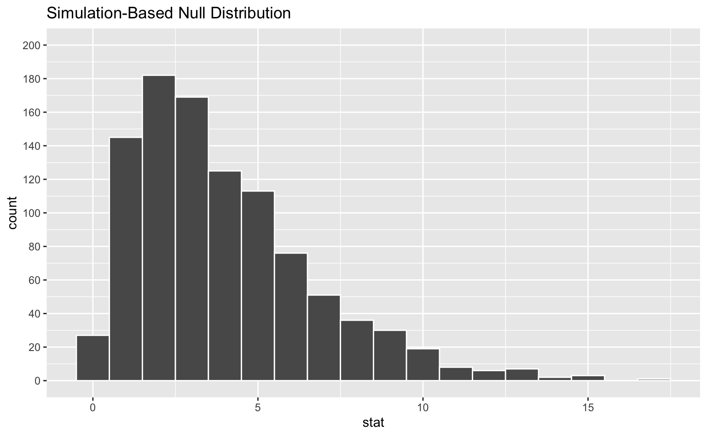
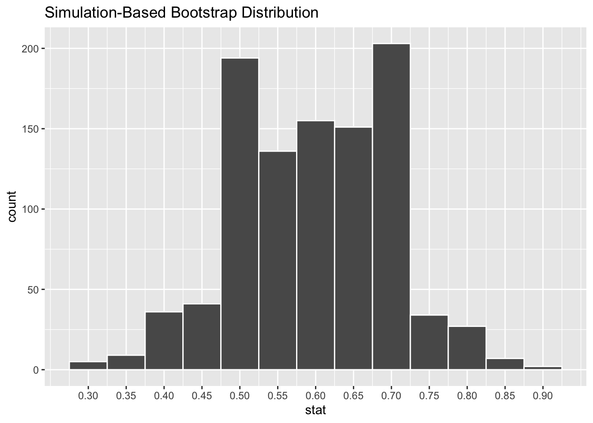

| Income | Beer | Wine | Liquor | Total |
|---|---|---|---|---|
| Less than $30,000 | 83 | 67 | 44 | 194 |
| $30,000 - $74,999 | 213 | 161 | 126 | 500 |
| $75,000 or more | 110 | 116 | 80 | 306 |
| Total | 406 | 344 | 250 | 1000 |
Exam 2 Review
Part 1 - Cheers
Gallup polls have consistently found large differences in alcohol consumption among education and income subgroups over time. The income and education differences in drinking are typically larger than those seen by other demographic characteristics, such as gender, age, race, region, and religion.
The table below shows the distribution of data from a Gallup poll that asked respondents about their preferred alcoholic beverage (beer, wine, or liquor) and their income bracket.
Question 1
In evaluating the relationship between these two variables, what is the response variable and what is the explanatory variable?
Question 2
Which of the following are appropriate visualizations for these data? Check all that apply.
I. Pie chart
II. Ridge plot
III. Side-by-side box plots
IV. Mosaic plot
V. Stacked bar plot- I
- I and II
- II and III
- IV and V
- Only V
Question 3
What are the hypotheses for evaluating whether there is a relationship between income bracket and preferred alcoholic beverage?
Question 4
If in fact the null hypothesis is true, how many Americans who make between $30,000 and $74,999 would we expect to have liquor as their preferred alcoholic beverage?
Question 5
The following plot is a histogram of the null distribution for this hypothesis test, created using the code below. The observed statistic is 4.74. Shade the area corresponding to the p-value for this test on the histogram of the null distribution below.
set.seed(1234)
null_dist <- income_alcohol |>
specify(response = alcohol, explanatory = income) |>
hypothesize(null = "independence") |>
generate(reps = 1000, type = "permute") |>
calculate(stat = "Chisq")

Question 6
Estimate the p-value. In your answer, describe how you arrived at your answer.
Question 7
Based on your answer to the previous question, what is the conclusion of the hypothesis test at the 5% discernibility level?
Part 2 - Employment
A large university knows that about 70% of the full-time students are employed at least 5 hours per week. The members of the Statistics Department wonder if the same proportion of their students work at least 5 hours per week. They randomly sample 25 majors and find that 15 of the students (60%) work 5 or more hours each week.
Question 8
Describe how you can set up a simulation to estimate the proportion of statistics majors who work 5 or more hours each week based on this sample.
Question 9
A bootstrap distribution with 1000 simulations is show below. Approximate the bounds of the 95% confidence interval based on this distribution.

Question 10
Suppose the lower bound of the confidence interval from the previous question is L and the upper bound is U. Which of the following is correct?
a. Between L to U of statistics majors work at least 5 hours per week.
b. 95% of the time the true proportion of statistics majors who work at least 5 hours per week is between L and U.
c. Between L and U of random samples of 25 statistics majors are expected to yield confidence intervals that contain the true proportion of statistics majors who work at least 5 hours per week.
d. 95% of random samples of 25 statistics majors will yield confidence intervals between L and U.
e. None of the above.
Question 11
Estimate the standard error of the bootstrap distribution.
Part 3 - Miscellaneous
Question 12
Choose the best answer.
A survey based on a random sample of 2,045 American teenagers found that a 95% confidence interval for the mean number of texts sent per month was (1450, 1550). A valid interpretation of this interval is
- 95% of all teens who text send between 1450 and 1550 text messages per month.
- If a new survey with the same sample size were to be taken, there is a 95% chance that the mean number of texts in the sample would be between 1450 and 1550.
- We are 95% confident that the mean number of texts per month of all American teens is between 1450 and 1550.
- We are 95% confident that, were we to repeat this survey, the mean number of texts per month of those taking part in the survey would be between 1450 and 1550.
Question 13
Which is bigger?
A researcher is planning to conduct a test of two proportions. The null hypothesis is \(H_0: p_1 - p_2 = 0\). The researcher has found that in their data \(\hat{p}_1 - \hat{p}_2 = 0.2\).
I. P-value associated if \(H_A: p_1 - p_2 \ne 0\) II. P-value associated if \(H_A: p_1 - p_2 > 0\)
- I > II
- I < II
- I = II
Question 14
Fill in the blanks.
a. Power of the test is the probability of ___.
b. Type 1 error rate is the probability of ___.
c. Type 2 error rate is the probability of ___.
d. Unbeknownst to you, let’s say that the null hypothesis is actually true in the population. You plan to run a study anyway. If the level of discernibility you choose (i.e., the cutoff for your p-value) is 0.05, the probability that you will mistakenly reject the null hypothesis is ____.
Question 15
True or false. And, if false, explain your reasoning.
a. The central limit theorem tells us that the sampling distribution of a sample proportion will be centered at \(\hat{p}\).
b. Increasing the number of bootstrap samples will decrease the width of the confidence interval.
c. The bootstrap distribution of a sample proportion, \(\hat{p}\), will be centered at \(\hat{p}\).
Bonus
Pick a concept we introduced in class so far that you’ve been struggling with and explain it in your own words.